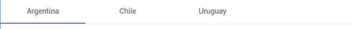
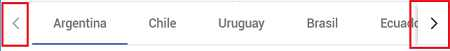
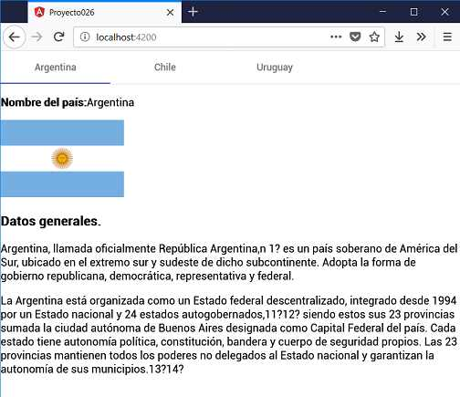

Angular material nos permite organizar vistas que se hacen visibles mediante distintas pestañas:
El título de cada pestaña se muestra en el encabezado y la pestaña activa tiene una barra distinta:
Cuando la lista de etiquetas de pestañas excede el ancho del encabezado, los controles de paginación aparecen para permitir al usuario desplazarse hacia la izquierda y hacia la derecha a través de las etiquetas:
Para el empleo de las pestañas necesitamos las etiquetas mat-tab-group y dentro de esta mat-tab por cada pestaña.
Mostrar tres pestañas con los datos de tres países.
Crearemos primero el proyecto
ng new proyecto026
Procedemos a instalar todas las dependencias de Angular Material ayudados por Angular CLI mediante el comando 'add':
ng add @angular/material
Modificamos el archivo 'app.module.ts' donde debemos importar MatTabsModule:
import { BrowserModule } from '@angular/platform-browser';
import { NgModule } from '@angular/core';
import { AppComponent } from './app.component';
import { BrowserAnimationsModule } from '@angular/platform-browser/animations';
import { MatTabsModule } from '@angular/material/tabs';
@NgModule({
declarations: [
AppComponent
],
imports: [
BrowserModule,
BrowserAnimationsModule,
MatTabsModule
],
providers: [],
bootstrap: [AppComponent]
})
export class AppModule { }
Codificamos la interfaz visual en el archivo 'app.component.html':
<mat-tab-group>
<mat-tab label="Argentina">
<div class="datos">
<p>
<strong>Nombre del país:</strong>Argentina
</p>
<p>
<img src="assets/imagenes/argentina.png">
</p>
<h3>Datos generales.</h3>
<p>Argentina, llamada oficialmente República Argentina, es un país soberano de América del Sur, ubicado en el extremo
sur y sudeste de dicho subcontinente. Adopta la forma de gobierno republicana, democrática, representativa y federal.</p>
<p>La Argentina está organizada como un Estado federal descentralizado, integrado desde 1994 por un Estado nacional y
24 estados autogobernados, siendo estos sus 23 provincias sumada la ciudad autónoma de Buenos Aires designada
como Capital Federal del país. Cada estado tiene autonomía política, constitución, bandera y cuerpo de seguridad
propios. Las 23 provincias mantienen todos los poderes no delegados al Estado nacional y garantizan la autonomía
de sus municipios.</p>
</div>
</mat-tab>
<mat-tab label="Chile">
<div class="datos">
<p>
<strong>Nombre del país:</strong>Chile
</p>
<p>
<img src="assets/imagenes/chile.png">
</p>
<h3>Datos generales.</h3>
<p>Chile es un país de América ubicado en el extremo sudoeste de América del Sur. Su nombre oficial es República de Chile
y su capital es la ciudad de Santiago. Primer país sudamericano en ingresar a la Organización para la Cooperación
y el Desarrollo Económicos, Chile es una de las economías de América Latina que más ha crecido desde mediados de
la década de 1980.</p>
<p>Antes del descubrimiento de América, las tierras situadas al sur del desierto de Atacama ya se llamaban Chili en la
tradición indígena. Una vez instalados en Nueva Castilla y Nueva Toledo, los conquistadores españoles siguieron
llamando de esa forma a la región del sur, a veces también conocida como «valle de Chile», nombre que se extendió
posteriormente a todo el actual país.</p>
</div>
</mat-tab>
<mat-tab label="Uruguay">
<div class="datos">
<p>
<strong>Nombre del país:</strong>Uruguay
</p>
<p>
<img src="assets/imagenes/uruguay.png">
</p>
<h3>Datos generales.</h3>
<p>Uruguay, oficialmente República Oriental del Uruguay, es un país de América del Sur, situado en la parte oriental del
Cono Sur americano. Limita al noreste con Brasil —estado de Río Grande del Sur—, al oeste con Argentina —provincias
de Entre Ríos y Corrientes— y tiene costas en el océano Atlántico al sureste y sobre el Río de la Plata hacia el
sur. Abarca 176?215 km² y es el segundo país más pequeño de Sudamérica, después de Surinam.1? Según los datos del
último censo del INE en 2011, la población de Uruguay es de 3.290.454 habitantes, por lo que figura en la décima
posición entre los países sudamericanos.Uruguay, oficialmente República Oriental del Uruguay, es un país de América
del Sur, situado en la parte oriental del Cono Sur americano. Limita al noreste con Brasil —estado de Río Grande
del Sur—, al oeste con Argentina —provincias de Entre Ríos y Corrientes— y tiene costas en el océano Atlántico al
sureste y sobre el Río de la Plata hacia el sur. Abarca 176?215 km² y es el segundo país más pequeño de Sudamérica,
después de Surinam.1? Según los datos del último censo del INE en 2011, la población de Uruguay es de 3.290.454 habitantes,
por lo que figura en la décima posición entre los países sudamericanos.
</p>
</div>
</mat-tab>
</mat-tab-group>
Agregamos las tres imágenes de las banderas en una carpeta llamada imagenes que se debe crear dentro de la carpeta 'assets':
<img src="assets/imagenes/uruguay.png">
Si ejecutamos la aplicación tenemos como resultado:
Podemos probar esta aplicación en la web aquí.
La estructura fundamental del archivo HTML para definir las pestañas es:
<mat-tab-group>
<mat-tab label="Argentina">
<p>datos</p>
</mat-tab>
<mat-tab label="Chile">
<p>datos</p>
</mat-tab>
<mat-tab label="Uruguay">
<p>datos</p>
</mat-tab>
</mat-tab-group>
El valor almacenado en la propiedad label de la etiqueta 'mat-tab' es lo que se muestra como título de la pestaña.